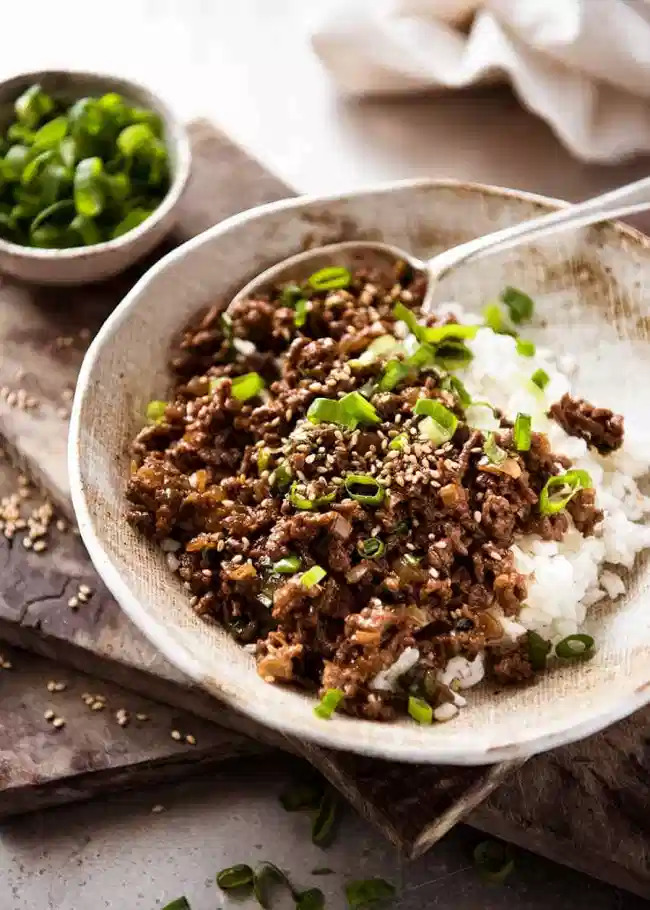
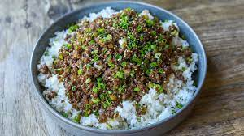
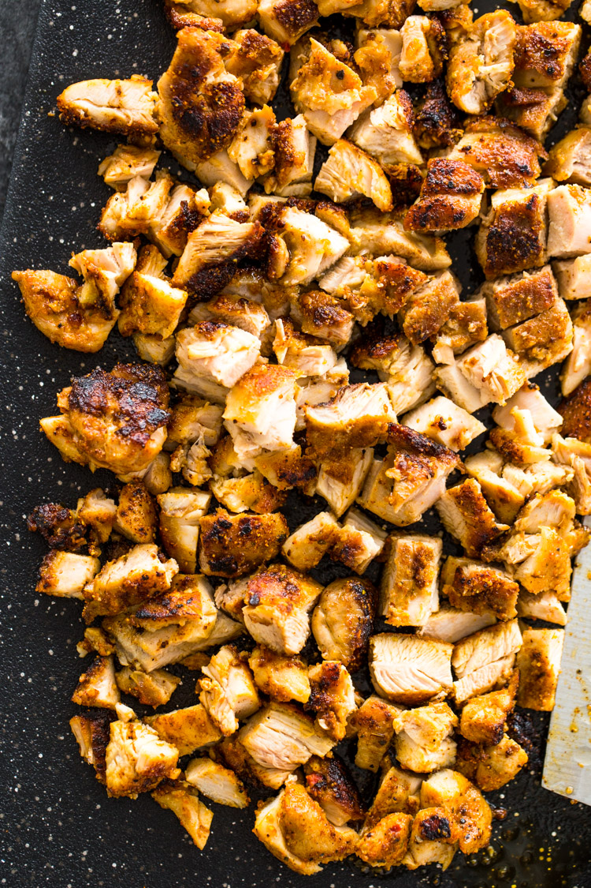
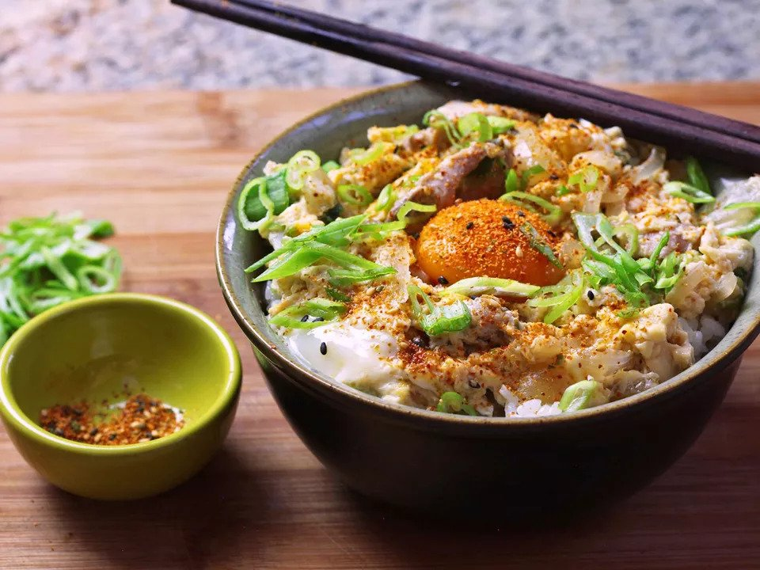
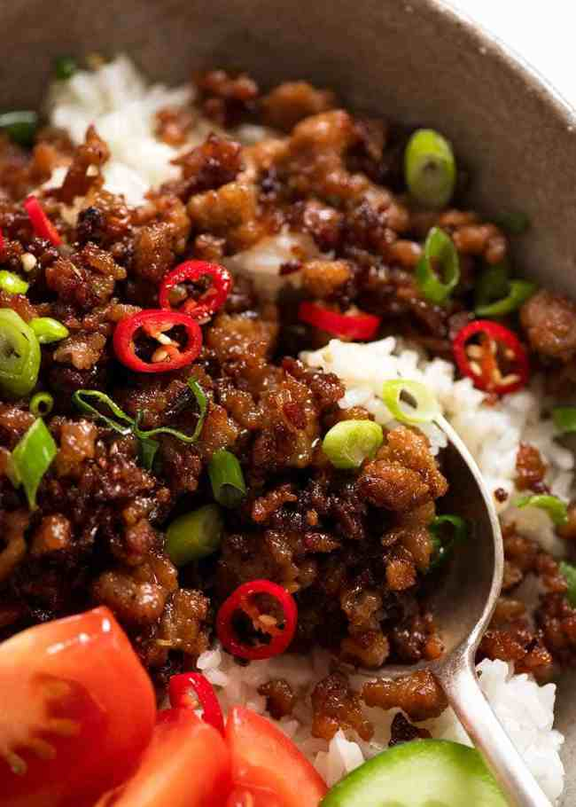

Frequent Recipes
BEEF

Ingredients
Sauce
- 1/2 tbsp Hoisin Sauce
- 1 tbsp Oyster Sauce
- 1/2 tbsp Chinese Cooking Wine
- 1 1/2 tbsp Dark Soy Sauce
- 1 tsp White Sugar
- 1/2 tsp Sesame Oil
- Black Pepper
Stir Fry
- 250 g Mince Beef
- 5 Garlic Clove Mince
- 1/2 Onion

Ingredients
- 250 g Mince Beef
- 7 Garlic Clove Chopped
- 1/2 Onion
- 2 tbsp Soy Sauce
- 1 tbsp Mirin
- 1 tbsp Sugar
- 1/2 tbsp Apricot Jam
- Black Pepper
CHICKEN

Rub
- 1 tsp Garlic Powder
- 1 tsp Onion
- 1/2 tsp Salt
- 1/2 tsp Black Pepper
- 1 tbsp Chilli Powder
- 1/2 tbsp Paprika

Ingredients
- 340 g Chicken Thighs
- 240 ml Hondashi
- 2 tbsp Dry Sake
- 1 tbsp Soy Sauce
- 1 tbsp sugar
- 1 Onion
- 3 Sliced Scallions
- 3-4 Large Eggs
PORK

Ingredients
- 250g g Mince Pork
- 1 tbsp Peanut Oil
- 1/2 Onion
- 2 tsp Ginger
- 5 Garlic Clove
- 1 Thai Chilli
- 2 1/2 tbsp Brown Sugar
- 1 tbsp Fish Sauce